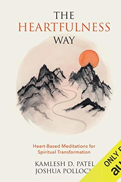

Library › Self-Improvement
The Heartfulness Way — Summary & Key Lessons

A modern restatement of Raja Yoga meditation: relax, still the mind, and let the heart do the work.
📖 OPEN THE FULL INTERACTIVE BREAKDOWN →🌐 Read it in Hindi, Hinglish, Gujarati, Tamil & 22 more languages — free, with audio.
💡 The Big Idea
The Heartfulness Way is a modern, secular-ish version of Raja Yoga taught through dialogue between its guide (Daaji) and a close student. Its distinctive claim is 'transmission' — that meditation can be assisted by an energy or presence from a practised meditator. The practical core, however, is simple and universal: relax the body, still the mind, meditate on the heart region, and let feelings replace thoughts.
🧠 The 5 Key Lessons
Lesson 1: Relaxation Precedes Meditation
Part 1: The Method
Daaji's method starts with the body: a relaxed posture, deep slow breaths, and a gentle scan releasing tension. The mind cannot calm while the body is braced. The guiding image is of a river settling after a storm: you do not push the water still; you wait, and it clears on its own.
📖 Example: Try meditating after a rushed commute versus after a slow walk — the entry state decides the session. Read the full example →
⚡ Do this: Before any mental work, 3 minutes of body-scan relaxation: jaw, shoulders, hands, belly.
Lesson 2: Stillness Is the Aim, Not Thoughts
Part 2: The Practice
The book's counsel on thoughts is unusually kind: do not fight them, do not judge them, do not count them. Simply return attention to the heart again and again. The mind is a puppy — it wanders, you bring it back, and the bringing back is the practice. Perfection in the first weeks is not the goal; return-rate is.
📖 Example: A session with fifty returns is a good session; a session with none is the dream of a beginner, not the standard. Read the full example →
⚡ Do this: Meditate 10 minutes daily on the heart region; count only your returns, never your wanderings.
Lesson 3: Clean the Mind Like a Room
Part 3: Cleaning
One of the book's best practical ideas: regular 'cleaning' of the mind — reviewing the day like sweeping a floor, releasing impressions rather than analysing them. Impressions accumulate between sessions; cleaning prevents backlog. This is emotional hygiene: name the residue (tension, resentment, worry) and let it go, like dust.
📖 Example: An argument that ends, but the irritation lives for three days — that residue is the dust that needs sweeping. Read the full example →
⚡ Do this: Each evening: 3 minutes of mental sweeping — watch the day pass, release what sticks.
Lesson 4: Feel Before You Think
Part 4: The Heart Region
Heartfulness meditates on the heart centre with a simple intention — not a mantra, but a feeling of love or light. The claim is that feelings are a subtler instrument than thoughts. In practical terms: tune your decision-making to values and felt alignment rather than pure calculation; the heart is not the enemy of reason but a faster processor of what matters.
📖 Example: Two job offers with equal numbers — the felt sense of 'this is where I belong' is data, not sentiment. Read the full example →
⚡ Do this: For one decision this week, write your analytical pros-and-cons, then your felt sense — and compare.
Lesson 5: Transmission and Its Skeptics
Part 5: The Transmission Question
The book's distinctive belief — that a master's presence can assist meditation — is the point of the name 'Heartfulness'. Practitioners report deepening through guided sittings. The honest frame: treat it as an optional accelerator you can test empirically. If a practice, guided or not, produces calm and clarity, keep it; the method's value is validated by your own results.
📖 Example: A guided session can feel like a shortcut to stillness for one meditator — and do nothing for another. Both are fine. Read the full example →
⚡ Do this: If curious, try one guided heartfulness session; measure your state before and after. Keep whatever works.
✅ 5-Step Action Plan
- Start every meditation with 3 minutes of body relaxation.
- 10 minutes daily on the heart region — count returns, not wanderings.
- Evening 3-minute mental sweep to clean impressions.
- In one decision, weight the felt sense along with the analysis.
- Test the guided option once; keep only what works for you.
⚠️ When This Doesn't Work
The 'transmission' claim is spiritual and untestable in the ordinary sense; stay grounded in the reproducible practices (relaxation, return, cleaning) which stand alone. The dialogues can also feel repetitive.
💀 The Graveyard Proves It
📷 Sati's Sacrifice — The Vow of Love That Became a Curse of Grief. Burn: Her life, and her father's world — a protest that ended in ashes Read the full case study →
💬 Best Quotes from The Heartfulness Way
- “Meditation is the passport to the world within.”
- “When the mind is still, the heart opens.”
- “Cleaning the mind is like cleaning a room — do it daily, not once in a while.”
Interactive version: mark lessons as read, listen in your language, share quote cards.